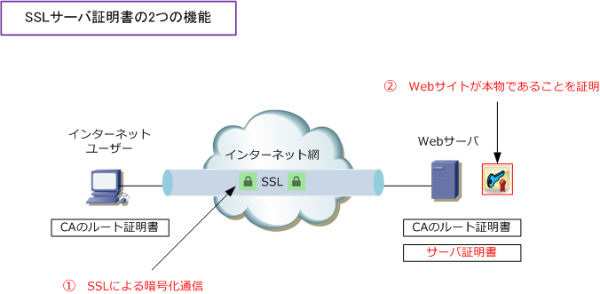
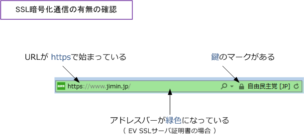
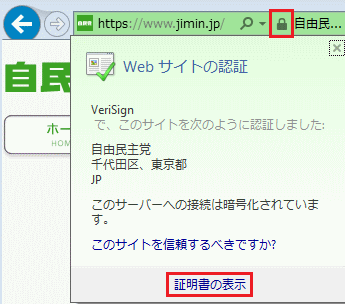
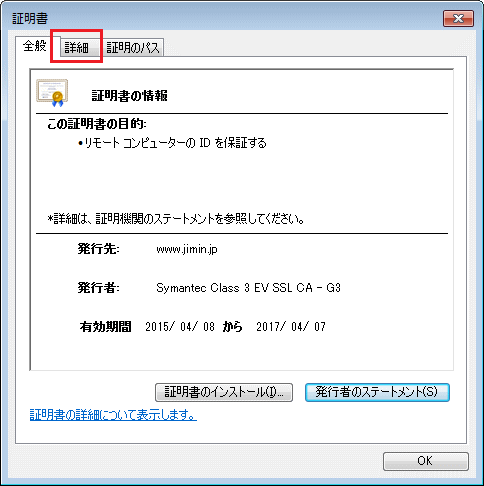
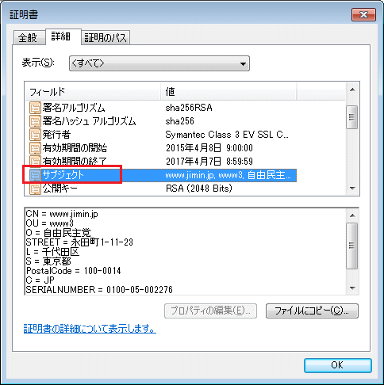
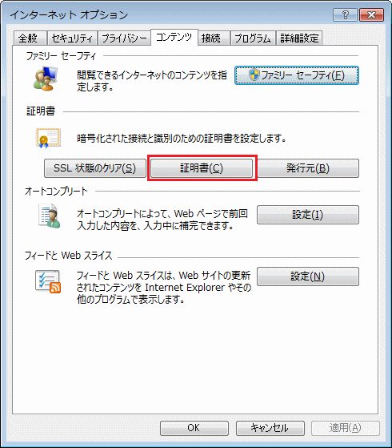
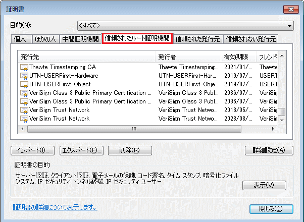

SSL Server Certificate
SSLサーバ証明書とは
SSLサーバ証明書とは「SSLによる暗号化通信」と「Webサイトの運営者の身元証明」の2つの機能を あわせ持つ電子証明書のことです。発行された電子証明書はWebサーバにインストールして利用します。 上記内容は、例えば、VeriSignの発行するSSLサーバ証明書の「企業認証型」における説明となります。

SSLサーバ証明書の機能は何かと問われ「 ①SSLによる暗号化通信 」と即答できる人は多いかと 思いますが、「②Webサイトの運営者の身元を確認できる」と即答できる人は少ないかもしれない。
例えば、自民党のWebサイトにアクセスすると、トップページの時点でSSL通信となりますが、これは ①だけでなく②も意識していることがよく分かります。一般的にはオンラインショッピングをする際や 重要な個人情報を入力する際に、①を意識してSSL通信（ https ）となるWebサイトは多いのですが、 ②を意識しているWebサイトはこのようにトップページの時点でSSL通信が行われるようにしています。
SSL通信が行われているかの確認方法
WebサーバにSSLサーバ証明書がインストールされていて、SSL暗号通信が行われているかどうかは 以下の3つの項目によって確認することができます。なお、アドレスバーの緑色はSSLサーバ証明書の 上位規格のEV SSLサーバ証明書（厳格な証明書）をインストールされている時にそのようになります。

参考：HTTPSの通信
Webブラウザで①の通り「https」と指定すればSSL通信となりますが、②のように443とポート番号を指定 しても、httpと指定していれば「ポート番号443を使用したHTTP通信」となります。基本を忘れないように。
① https://www.sbisec.co.jp/ ← 暗号化されたHTTPS通信 ② http://www.sbisec.co.jp:443/ ← ポート番号443を使用する暗号化されないHTTP通信
SSLサーバ証明書の内容確認方法
① アドレスバーの鍵マークをクリックすると以下の画面が表示されるので、そこで"証明書の表示"を選択。

② 以下の画面が表示されるので、「詳細」を選択。

③ 以下の画面が表示されるので「サブジェクト」を選択。上図と下図の情報により、www.jimin.jp は VeriSginにより本物であることが証明されており、自由民主党の本物のWebサイトである事が分かります。

ルート証明書を信頼できるかどうかの確認方法
WebサーバにSSLサーバ証明書がインストールされていても、そのルート証明書が信頼できるかどうかは 次の手順により確認することができます。ブラウザがIEの場合「ツール」⇒ 「インターネットオプション」 ⇒ 「コンテンツ」 ⇒ 「証明書」を選択します。

次に、以下の画面で「信頼されたルート証明機関」のタブを選択してそこで確認できます。ここに登録される ルート証明機関は第三者による厳正な定期監査にパスした機関だけです。※あらかじめブラウザに登録される。

ただし、信頼されたルート証明機関に登録されている場合は「鍵マーク」が表示されて信頼されたルート 証明機関に登録がない場合はブラウザに以下メッセージが表示されることから、わざわざ信頼されたルート 証明機関を自身のWebブラウザで確認する必要はありません。
Webブラウザに出力されるメッセージ ⇒「 このWebサイトのセキュリティ証明書には問題があります。 」